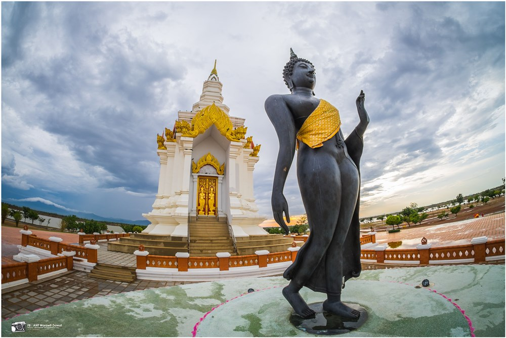
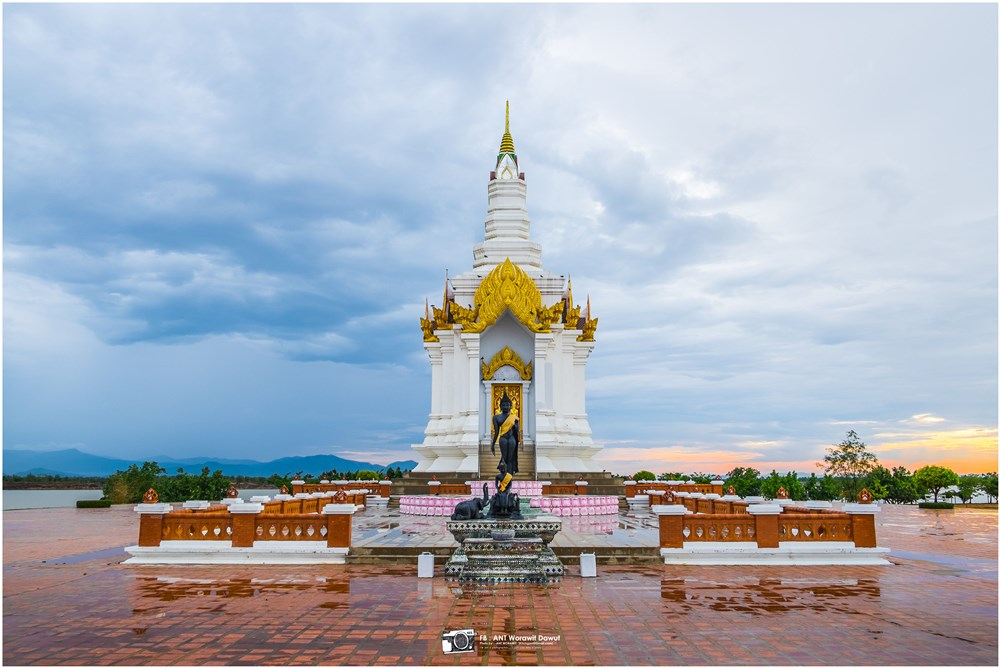
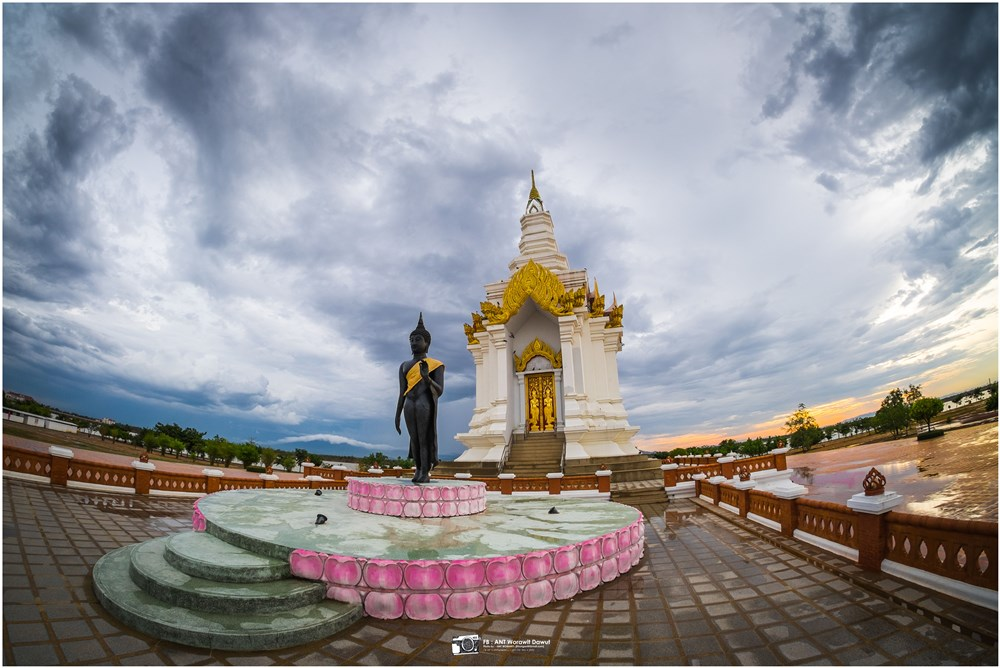

แผ่นดินศักดิ์สิทธิ์รูปหัวใจ

แผ่นดินศักดิ์สิทธิ์รูปหัวใจ
คำว่า “แผ่นดินรูปหัวใจ” เกิดจากแนวคิดของ ฯพณฯ สมศักดิ์ เทพสุทิน ที่ต้องการให้แผ่นดินนี้เป็นศูนย์รวมแห่งความรักใคร่ปรองดองของชาวเมืองสุโขทัย และเชื่อมโยงความรักผูกพันกับบรรพบุรุษสมัยสุโขทัยถึงปัจจุบัน จึงเลือกสัญลักษณ์แห่งความรักคือ “รูปหัวใจ” ส่วนคำว่าแผ่นดินศักดิ์สิทธิ์ นั้น ดร.พรรณสิริ กุลนาถศิริ ได้ดำเนินการจัดทำบุญพิธี เก็บและกลั่นดินจากทุกครอบครัวในแต่ละหมู่บ้านจำนวน 843 หมู่บ้าน ทำให้เป็นดินบริสุทธิ์ ด้วยการตั้งปณิธานร่วมแรงร่วมใจร่วมศรัทธากับชาวสุโขทัยว่าเราจะร่วมสร้างแผ่นดินนี้ให้รุ่งเรืองประสบการณ์
- ถ้าได้นั่งเครื่องบินแล่นผ่าน ทุ่งทะเลหลวง จังหวัดสุโขทัย แล้วมองลงมายังเบื้องล่าง เชื่อว่าภาพที่เห็นตรงหน้าจะสร้างความตกตะลึงได้อย่างแน่นอน เพราะแผ่นดินศักดิ์สิทธิ์รูปหัวใจหรือเกาะรูปหัวใจ ถูกเนรมิตขึ้นมาได้อย่างงดงาม ซึ่งเกิดจากแนวคิดโครงการแก้มลิงตามแนวพระราชดำริ เพื่อแก้ปัญหาน้ำท่วม-แล้ง


สถานที่ตั้ง
-
ทุ่งทะเลหลวง จังหวัดสุโขทัย